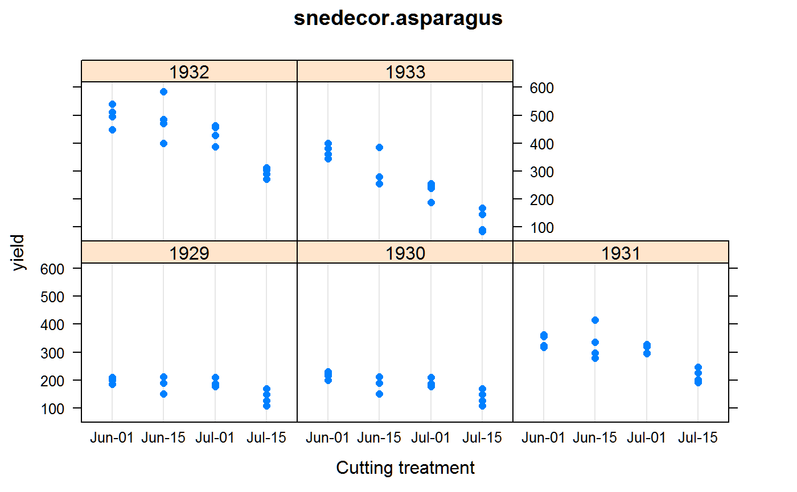

snedecor.asparagus.RdAsparagus yields for different cutting treatments, in 4 years.
A data frame with 64 observations on the following 4 variables.
blockblock factor, 4 levels
yearyear, numeric
trttreatment factor of final cutting date
yieldyield, ounces
Planted in 1927. Cutting began in 1929. Yield is the weight of asparagus cuttings up to Jun 1 in each plot. Some plots received continued cuttings until Jun 15, Jul 1, and Jul 15.
In the past, repeated-measurement experiments like this were sometimes analyzed as if they were a split-plot experiment. This violates some indpendence assumptions.
Snedecor and Cochran, 1989. Statistical Methods.
Mick O'Neill, 2010. A Guide To Linear Mixed Models In An Experimental Design Context. Statistical Advisory & Training Service Pty Ltd.
library(agridat) data(snedecor.asparagus) dat <- snedecor.asparagus dat <- transform(dat, year=factor(year)) dat$trt <- factor(dat$trt, levels=c("Jun-01", "Jun-15", "Jul-01", "Jul-15")) # Continued cutting reduces plant vigor and yield libs(lattice) dotplot(yield ~ trt|year, data=dat, xlab="Cutting treatment", main="snedecor.asparagus")# Split-plot# ----------------------------------------------------------------------------# Split-plot with asreml # asreml3 libs(asreml) m2 <- asreml(yield ~ trt + year + trt:year, data=dat, random = ~ block + block:trt)#> ASReml: Fri Aug 16 15:02:08 2019 #> #> LogLik S2 DF wall cpu #> -245.5888 735.6371 60 15:02:08 0.0 #> -242.0117 605.5420 60 15:02:08 0.0 #> -239.0555 499.9978 60 15:02:08 0.0 #> -237.5238 429.6526 60 15:02:08 0.0 #> -237.3182 408.7932 60 15:02:08 0.0 #> -237.3070 404.9197 60 15:02:08 0.0 #> -237.3068 404.6548 60 15:02:08 0.0 #> -237.3068 404.6521 60 15:02:08 0.0 #> #> Finished on: Fri Aug 16 15:02:08 2019 #> #> LogLikelihood Converged#> effect component std.error z.ratio constr #> block!block.var 354.3 405.3 0.87 P #> block:trt!block.var 462.8 256.8 1.8 P #> R!variance 404.7 82.6 4.9 P## effect component std.error z.ratio constr ## block!block.var 476.7 518.2 0.92 pos ## block:trt!block.var 499.7 287.4 1.7 pos ## R!variance 430.2 101.4 4.2 pos # Antedependence with asreml. See O'Neill (2010). dat <- dat[order(dat$block, dat$trt), ] m3 <- asreml(yield ~ year * trt, data=dat, random = ~ block, rcov = ~ block:trt:ante(year,1))#> ASReml: Fri Aug 16 15:02:09 2019 #> #> LogLik S2 DF wall cpu #> -255.1403 1.0000 60 15:02:09 0.0 (1 restrained) #> -244.5549 1.0000 60 15:02:09 0.0 #> -233.9922 1.0000 60 15:02:09 0.0 #> -222.7028 1.0000 60 15:02:09 0.0 #> -220.3322 1.0000 60 15:02:09 0.0 #> -220.0886 1.0000 60 15:02:09 0.0 #> -220.0761 1.0000 60 15:02:09 0.0 #> -220.0754 1.0000 60 15:02:09 0.0 #> -220.0752 1.0000 60 15:02:09 0.0 #> #> Finished on: Fri Aug 16 15:02:09 2019 #> #> LogLikelihood Converged# Extract the covariance matrix for years and convert to correlation covmat <- diag(4) covmat[upper.tri(covmat,diag=TRUE)] <- m3$R.param$R$year$initial#> Warning: number of items to replace is not a multiple of replacement lengthcovmat[lower.tri(covmat)] <- t(covmat)[lower.tri(covmat)] round(cov2cor(covmat),2) # correlation among the 4 years#> [,1] [,2] [,3] [,4] #> [1,] 1.00 0.94 0.43 0.37 #> [2,] 0.94 1.00 0.46 0.40 #> [3,] 0.43 0.46 1.00 0.87 #> [4,] 0.37 0.40 0.87 1.00# [,1] [,2] [,3] [,4] # [1,] 1.00 0.45 0.39 0.31 # [2,] 0.45 1.00 0.86 0.69 # [3,] 0.39 0.86 1.00 0.80 # [4,] 0.31 0.69 0.80 1.00 # We can also build the covariance Sigma by hand from the estimated # variance components via: Sigma^-1 = U D^-1 U' vv <- vc(m3) print(vv)#> effect component std.error z.ratio constr #> block!block.var 70.1 144.1 0.49 P #> R!variance 1 NA NA F #> R!year.1929:1929 0.00231 0.00103 2.2 U #> R!year.1930:1929 -0.9393 0.1132 -8.3 U #> R!year.1930:1930 0.01823 0.00758 2.4 U #> R!year.1931:1930 -0.7288 0.4671 -1.6 U #> R!year.1931:1931 0.00116 0.00048 2.4 U #> R!year.1932:1931 -1.143 0.1944 -5.9 U #> R!year.1932:1932 0.00209 0.00085 2.4 U #> R!year.1933:1932 -0.6833 0.1561 -4.4 U #> R!year.1933:1933 0.002 0.00082 2.4 U## effect component std.error z.ratio constr ## block!block.var 86.56 156.9 0.55 pos ## R!variance 1 NA NA fix ## R!year.1930:1930 0.00233 0.00106 2.2 uncon ## R!year.1931:1930 -0.7169 0.4528 -1.6 uncon ## R!year.1931:1931 0.00116 0.00048 2.4 uncon ## R!year.1932:1931 -1.139 0.1962 -5.8 uncon ## R!year.1932:1932 0.00208 0.00085 2.4 uncon ## R!year.1933:1932 -0.6782 0.1555 -4.4 uncon ## R!year.1933:1933 0.00201 0.00083 2.4 uncon U <- diag(4) U[1,2] <- vv[4,2] ; U[2,3] <- vv[6,2] ; U[3,4] <- vv[8,2] Dinv <- diag(c(vv[3,2], vv[5,2], vv[7,2], vv[9,2])) # solve(U <!-- %*% Dinv %*% t(U)) # same as 'covmat' above --> solve(crossprod(t(U), tcrossprod(Dinv, U)) )#> [,1] [,2] [,3] [,4] #> [1,] 433.3047 407.0146 296.6240 338.9877 #> [2,] 407.0146 437.1682 318.5994 364.1015 #> [3,] 296.6240 318.5994 1097.4218 1254.1548 #> [4,] 338.9877 364.1015 1254.1548 1912.1998## [,1] [,2] [,3] [,4] ## [1,] 428.4310 307.1478 349.8152 237.2453 ## [2,] 307.1478 1083.9717 1234.5516 837.2751 ## [3,] 349.8152 1234.5516 1886.5150 1279.4378 ## [4,] 237.2453 837.2751 1279.4378 1364.8446# ----------------------------------------------------------------------------# Split-plot with asreml ## libs(asreml4) ## m2 <- asreml(yield ~ trt + year + trt:year, data=dat, ## random = ~ block + block:trt) ## libs(lucid) ## vc(m2) ## ## effect component std.error z.ratio bound ## ## block 476.7 518.2 0.92 P 0 ## ## block:trt 499.7 287.4 1.7 P 0 ## ## units(R) 430.2 101.4 4.2 P 0 ## # Antedependence with asreml. See O'Neill (2010). ## dat <- dat[order(dat$block, dat$trt), ] ## m3 <- asreml(yield ~ year * trt, data=dat, ## random = ~ block, ## residual = ~ block:trt:ante(year,1), ## max=50) ## # Extract the covariance matrix for years and convert to correlation ## covmat <- diag(4) ## covmat[upper.tri(covmat,diag=TRUE)] <- m3$R.param$`block:trt:year`$year$initial ## covmat[lower.tri(covmat)] <- t(covmat)[lower.tri(covmat)] ## round(cov2cor(covmat),2) # correlation among the 4 years ## # [,1] [,2] [,3] [,4] ## # [1,] 1.00 0.45 0.39 0.31 ## # [2,] 0.45 1.00 0.86 0.69 ## # [3,] 0.39 0.86 1.00 0.80 ## # [4,] 0.31 0.69 0.80 1.00 ## # We can also build the covariance Sigma by hand from the estimated ## # variance components via: Sigma^-1 = U D^-1 U' ## vv <- vc(m3) ## print(vv) ## ## effect component std.error z.ratio constr ## ## block!block.var 86.56 156.9 0.55 pos ## ## R!variance 1 NA NA fix ## ## R!year.1930:1930 0.00233 0.00106 2.2 uncon ## ## R!year.1931:1930 -0.7169 0.4528 -1.6 uncon ## ## R!year.1931:1931 0.00116 0.00048 2.4 uncon ## ## R!year.1932:1931 -1.139 0.1962 -5.8 uncon ## ## R!year.1932:1932 0.00208 0.00085 2.4 uncon ## ## R!year.1933:1932 -0.6782 0.1555 -4.4 uncon ## ## R!year.1933:1933 0.00201 0.00083 2.4 uncon ## U <- diag(4) ## U[1,2] <- vv[4,2] ; U[2,3] <- vv[6,2] ; U[3,4] <- vv[8,2] ## Dinv <- diag(c(vv[3,2], vv[5,2], vv[7,2], vv[9,2])) ## # solve(U ## solve(crossprod(t(U), tcrossprod(Dinv, U)) ) ## ## [,1] [,2] [,3] [,4] ## ## [1,] 428.4310 307.1478 349.8152 237.2453 ## ## [2,] 307.1478 1083.9717 1234.5516 837.2751 ## ## [3,] 349.8152 1234.5516 1886.5150 1279.4378 ## ## [4,] 237.2453 837.2751 1279.4378 1364.8446# ----------------------------------------------------------------------------